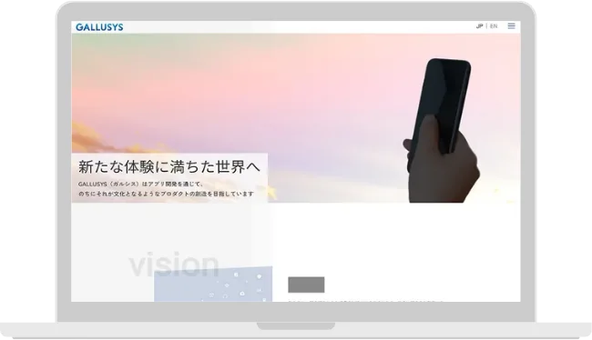
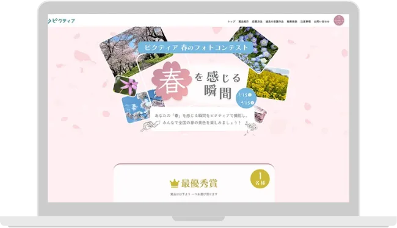
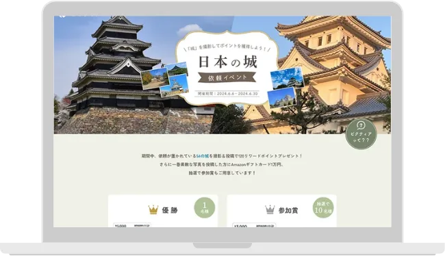
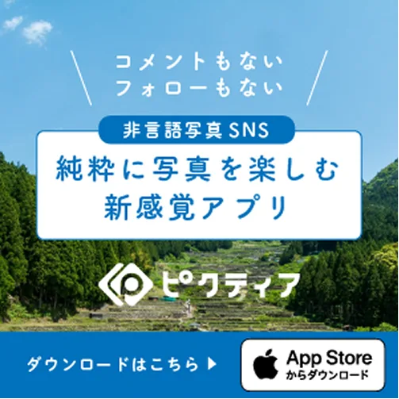
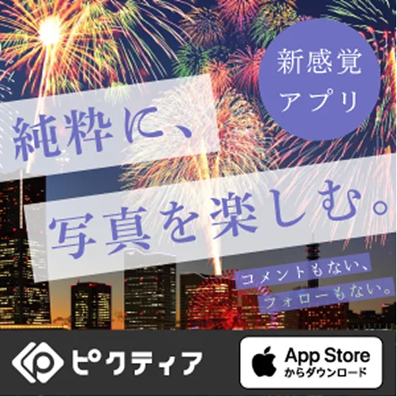
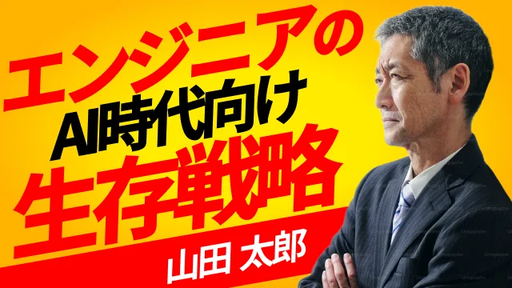
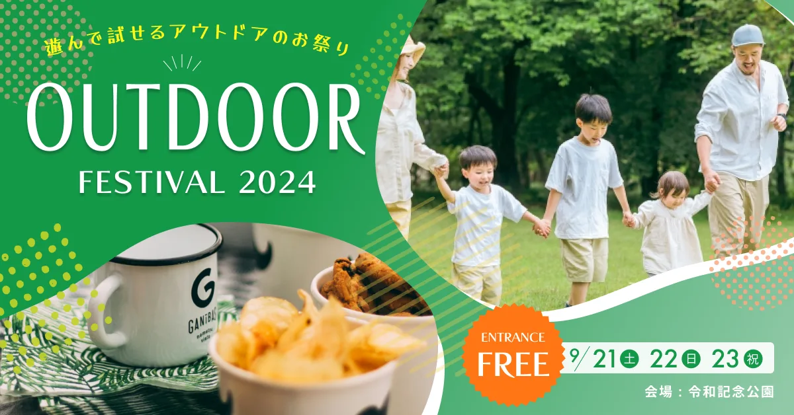
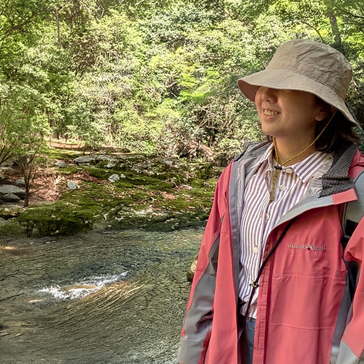

歴20年以上。表面的なデザインにとどまらず、目的を踏まえて課題を整理し、成果へ繋げる課題解決型のデザインを行います。
複数の担当者が入ることで起こりがちな認識ズレや手戻りを最小限に抑え、スムーズで高品質なアウトプットを実現します。
情報整理が得意です。ぼんやりとしたご用件をしっかり形にし、課題解決のためのプランをご提案させて頂きます。
分かりやすく操作性の良いUI・UXを重視するとともに、デザイン性も大切にしています。両者のバランスを考えながら最適なデザインをお作りします。
デザインの再現性の高いコーディングを得意としています。WordPressを使用した更新性の高いサイト構築、JavaScriptを使用した動きのあるサイト制作も可能です
レスポンシブ、Sass、アニメーション等動きのあるコードを実装することが可能です。
オリジナルテーマの作成などカスタマイズも可能です。
オートレイアウト・コンポーネントといったFigmaの特徴的な機能を使い、効率的かつ開発に強いデザインを作成します。
Figmaがメインツールですが機能的に足りない部分もあるので、今もAdobeソフトはバリバリ使っています。
オンラインプログラミングスクールにてWeb制作講師を務める他、Java研修のサブ講師として企業研修にも携わっています。
Git・Github・Canva・Shopify・HubSpot など
制作実績は多数ありますが主に業務委託で仕事を行っているため、著作権に配慮し一部のみ掲載しております。
恐れ入りますがポートフォリオ集は別途、ご案内させて頂きます。








大西麻子 / 大阪府在住 /二児の母
趣味：お菓子作り、フラワーアレンジメント、トレッキング
マイブーム：野菜作り・Javaプログラミング
資格：日本ソムリエ協会認定ワインエキスパート
座右の銘：意志あるところに道は開ける
学ぶことが好きです。いくつになっても好奇心旺盛に新しいことにチャレンジしてきたいです。
常にトレンドをキャッチアップして業務に活かしていきます。